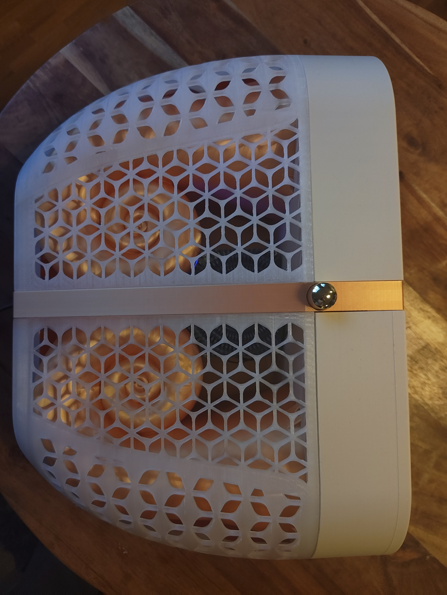
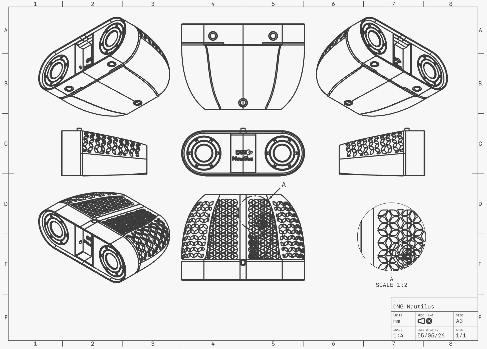
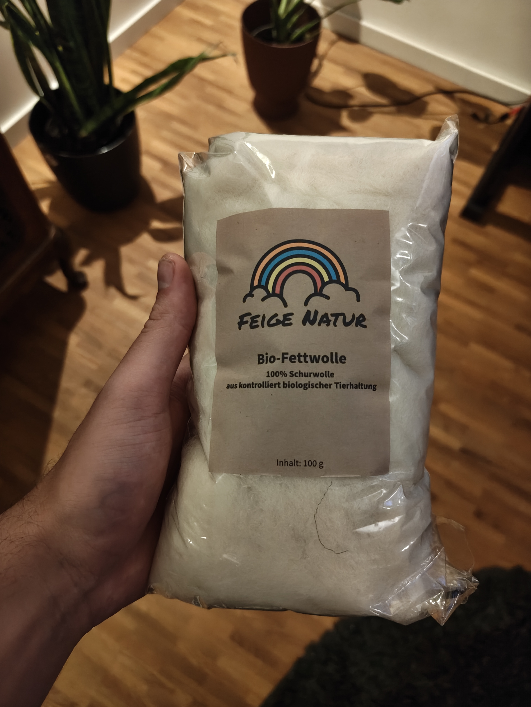
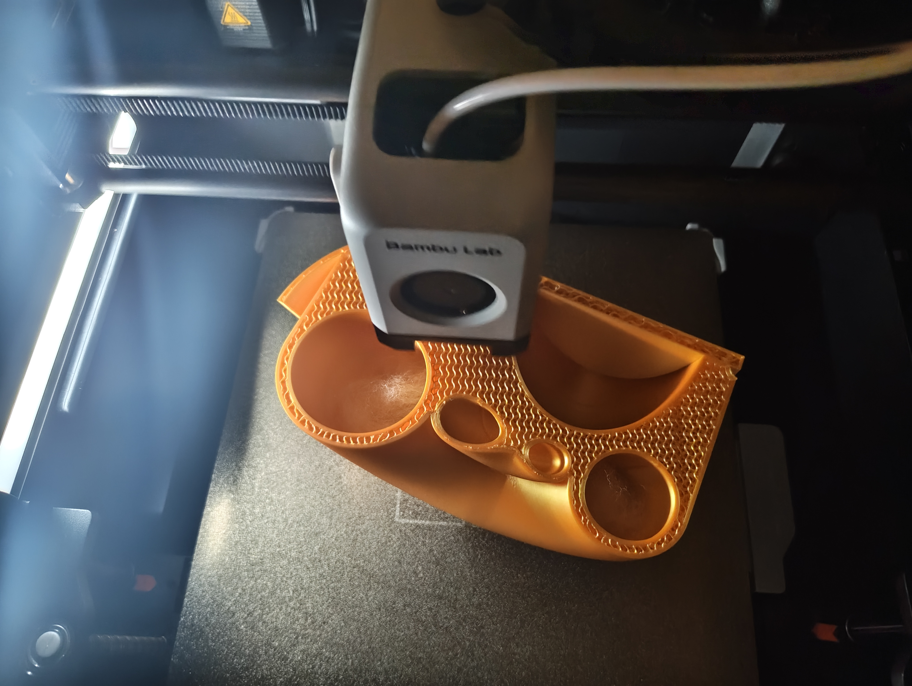

What you're building
The DMG-Nautilus is a full-range speaker system built inside a 3D-printed enclosure shaped after the logarithmic spiral of the nautilus shell. Each channel is a sealed, tapered tube — a shape that naturally terminates standing waves and loads the driver with a smoothly increasing air mass, a problem that otherwise requires complex acoustic engineering to solve.
Two Tectonic TEBM65C20F-8 BMR (Balanced Mode Radiator) drivers sit in a 3D-printed front baffle, backed by FDM-printed spiral enclosures packed with long-hair sheep wool. The assembly is held together with embedded magnets, so the cover removes without tools. A Wondom Jab2+ amplifier board handles both channels from a single power brick.
This guide covers the design rationale, print settings, acoustic treatment, wiring, and final assembly. No prior speaker-building experience required — but it helps to have built something with FDM before, since the spiral print is the most demanding part.

The finished DMG-Nautilus on the shelf.

Top view of the assembled pair.
Why the nautilus?
The Golden Ratio, φ ≈ 1.618, appears when a line is divided so that the ratio of the whole to the larger part equals the ratio of the larger part to the smaller. It turns up, unreasonably often, in the proportions of living things. The spiral arrangement of seeds in a sunflower head, the branching angles of trees, the curve of a ram's horn, the arrangement of florets on a romanesco — all of these emerge from growth processes governed by the same underlying relationship.
The mathematical object that encodes it is the logarithmic spiral: a curve that grows outward at a constant angle, so every successive turn is exactly φ times wider than the one before. Unlike an Archimedean spiral (where the spacing between turns is constant), the logarithmic spiral is self-similar — zoom in or out and it looks exactly the same.
The chambered nautilus (Nautilus pompilius) is a frequently cited example of the golden spiral in nature — though the real story is slightly more precise than the popular version. The outer edge of the shell does not trace a perfect golden spiral; measured carefully, the growth ratio per quarter-turn is closer to 1.33 than to φ. But it is, unambiguously, a logarithmic spiral with a very low deviation from the golden form across its outer whorls. Close enough that for centuries it has served as the canonical illustration of the ratio — and, for our purposes, close enough that the geometry produces the acoustic properties we want.
What makes the nautilus structurally extraordinary is that the shell achieves exceptional stiffness and strength with minimal material. Each chamber is bounded by a curved wall (the septum) oriented to resist the pressure differential between adjacent gas-filled chambers. The same self-similar geometry that makes it look beautiful also makes it an unusually efficient pressure vessel.
// WHY IT WORKS AS A SPEAKER ENCLOSUREA speaker driver is, in simple terms, a piston moving air. The enclosure behind the cone must do two things: prevent the rear wave from cancelling the front wave, and control the compliance (springiness) of the air load on the driver's rear. A sealed box does both — the trapped air acts as a restoring spring. The problem with a simple box is that its flat, parallel walls support standing waves at predictable frequencies. A mode at, say, 400 Hz will reinforce output at that frequency and create a dip at its cancellation point, audible as coloration.
A tapered tube — widening from the driver outward — kills standing waves because there is no single parallel reflection path. The wavefront is continuously diffracted, and the gradually increasing cross-section loads the driver with a smoothly changing acoustic impedance rather than a step function. Combine that with a curved geometry and the result is a nearly non-resonant rear enclosure. This is the principle behind the original Bowers & Wilkins Nautilus loudspeaker (1993) — the shape here is directly inspired by it, scaled and adapted for FDM printing and BMR full-range drivers.
// PORTED VS. SEALED — AND WHY THIS DESIGN IS SEALEDA ported (bass-reflex) enclosure uses a tuned vent to extend low-frequency response. The port resonates at a specific frequency, reinforcing bass output at the Helmholtz resonance of the vent/cabinet system. It sounds appealing on paper. In practice, for a small, high-aspect-ratio enclosure like a printed spiral, achieving a correctly tuned port is extremely sensitive to manufacturing tolerances — the vent length and diameter need to be precise to within millimetres to hit the target frequency, and any misalignment in the print changes the tuning. The sealed geometry of the nautilus spiral, combined with sheep-wool damping, gives predictable, well-controlled low-frequency roll-off with much higher tolerance for print variation.
// VOLUME AND RESONANT FREQUENCYFor the Tectonic TEBM65C20F-8 BMR driver (Vas ≈ 1.6 L, Qts ≈ 0.67, Fs ≈ 100 Hz), the ideal sealed-box volume and the resulting system resonance can be estimated with the standard closed-box equations:
| Parameter | Formula / Value | Notes |
|---|---|---|
| Target Qtc | 0.707 | Butterworth — maximally flat in-band response |
| Vb (box volume) | ≈ 0.5 – 0.8 L per driver | Vb = Vas · (Qts / Qtc)² − 1 |
| System Fc | ≈ 130 – 160 Hz | Fc = Fs · √(Vas / Vb + 1) |
| Roll-off slope | −12 dB / octave | Second-order high-pass behaviour below Fc |
The printed spiral holds approximately 0.65 L of effective internal volume per channel after accounting for wall thickness, wool packing, and the driver's own displacement. That lands squarely in the target window for a Qtc of 0.707. More wool reduces the effective resonant frequency slightly (by increasing the apparent volume) and adds broadband damping — the wool should fill roughly 60–70% of the interior volume, not be packed solid.
// STIFFNESS, MASS, AND RESONANCEEvery physical body has resonant frequencies at which it vibrates freely — the same principle as a tuning fork. For a speaker enclosure, panels that resonate in the audio band add colouration: the enclosure walls start to radiate their own sound, layered on top of the driver's output.
The resonant frequency of a panel scales as f ∝ √(stiffness / mass). Increase stiffness (more walls, denser infill) and resonances move up in frequency. Increase mass (more material) and they move down. The goal is to push them out of the most audible mid-bass region — ideally above 3–4 kHz, where the driver's output is already rolling off and the ear is less sensitive to colouration.
Four perimeter walls and 20% gyroid infill achieve a good balance for PLA: the gyroid pattern distributes stress evenly in all directions (unlike grid or honeycomb, which have preferential stiffness axes), and the resulting panel stiffness is high enough to push primary resonances well above 1 kHz. The curved geometry of the spiral further distributes bending stress, so there are fewer large flat panels prone to fundamental resonance.
What you'll need
Total cost sits at roughly 90–110 € depending on where you source the drivers and amp board. The hardware (screws, inserts, magnets) is widely available on Amazon or AliExpress.
| Component | Spec / Notes | Qty | Link |
|---|---|---|---|
| Tectonic TEBM65C20F-8 BMR | 3.5" full-range BMR driver, 8 Ω, 15 W RMS. The Balanced Mode Radiator design gives wide, flat dispersion without a tweeter. | × 2 | Tectonic ↗ |
| Sure Electronics Wondom Jab2+ | 2 × 50 W Class-D amplifier board. Include the functional cable set for clean power and signal connections. | × 1 | Wondom ↗ |
| M2.5 Flathead Screws + Heat Inserts | For fixing the nautilus spiral to the front enclosure. | × 8 | STANDARD HARDWARE |
| M3 Inbus Screws + Heat Inserts | For fixing the BMR drivers to the front baffle. | × 12 | STANDARD HARDWARE |
| 10 mm Neodymium Magnets | For tool-free cover assembly. One pack (~20 pcs.) covers both speakers. | × 20 | AMAZON / ALIEXPRESS |
| Long-hair Sheep Wool | Acoustic damping inside the spiral chamber. Long-hair (not carded or felted) works significantly better than synthetic alternatives. | ~100 g | Amazon ↗ |
| Play-Doh / Modelling Putty | For sealing cable pass-through holes in the enclosure. Stays pliable, re-sealable, and acoustically inert. | small amount | YOU LIKELY HAVE THIS |
| Super Glue (CA) | For permanently fixing magnet pockets, etc. if needed. | small amount | YOU LIKELY HAVE THIS |
| Power Connector | 19 - 24 V DC and 3.0 A Rating. | 1 | Amazon ↗ |
| Gold Plated Cable Connectors | Make sure to have a larger size (e.g., ~6mm and a smaller size ~3mm). The larger one connects to the + latch, the smaller one to the - latch of the drivers. | 1 | Amazon ↗ |
| PLA Filament Nautilus - Color of Choice | For spiral enclosures. | ~2 kg | ANY BRAND; Great experience with Sunlu dual-color. |
| PLA Filament Front - Beige | For front baffle. Standard PLA. | ~2 kg | ANY BRAND; Great experience with Elegoo PLA+ Beige. |
| PLA Filament — Translucent | For the patterned cover. Milky/natural translucent gives the best light diffusion for the nature-inspired pattern. Clear transparent is not recommended (see Step 02). | ~800 g | ANY BRAND |
Step by step
Work through these in order. The print steps (01 and 02) take the longest wall-clock time and can run in parallel on two printers. Steps 03 and 04 are a few hours of hands-on work.
The enclosure geometry is a direct translation of the nautilus logarithmic spiral into a 3D-printable tapered tube. The inner bore starts narrow at the sealed rear terminus and widens continuously to the driver aperture at the front, matching the approximate cross-sectional growth ratio of the shell. Each turn of the spiral increases the effective tube diameter by a factor of approximately 1.33 — close to φ, and enough to kill any useful standing-wave path.
The design was modelled in CAD with the following constraints: minimum wall thickness of 6 mm for the speaker volume to ensure sufficient stiffness; magnet pockets sized for 10 mm neodymium discs;and an overall external diameter that keeps the two spirals side-by-side without exceeding a standard 256 mm print bed.
The STL files are in the Google Drive folder. If you want to adapt the design — different driver diameter, different growth ratio — feel free to contact me.

Section view showing the tapered inner bore of the spiral.

Nautilus render including the DMG LU-1.
There are three distinct prints: the spiral enclosures (one per channel), the front baffle (one per channel), and the decorative covers. Print the spirals and fronts first — they are structurally critical and benefit from the more conservative settings below. Print the covers last, as the translucent filament requires some fine-tuning.
Orient the spiral with the back end on the base. This avoids the overhanging inner bore from needing support. Supports are only needed for the very bottom part of each nautilus.
Material: PLA
Layer height: 0.2 mm
Walls: 4 perimeters ← critical for acoustic stiffness
Infill: 20% (gyroid — distributes stress isotropically)
Bed temp: 55 °C
Nozzle temp: 210 – 230 °C (depending on filament)
Speed (PLA): 240 mm/s (use your standard settings)
Supports: only for magnet pocket undercuts
Estimated time: ~1 day per spiral (BambuLab P1S)
Why gyroid infill? Standard grid or honeycomb infill has preferential stiffness axes — it is stiffer in one direction than another. Gyroid infill is a triply-periodic minimal surface: its stiffness is nearly identical in all directions. For a body that will transmit acoustic vibration, this eliminates the directional resonance peaks that grid infill introduces.
The relationship between wall count, infill, and resonant frequency: adding a fourth perimeter wall roughly doubles the bending stiffness of the outer shell compared to two walls. Going to 30% infill gives diminishing acoustic returns while adding significant print time and weight.
Spiral on the print bed, aperture-side down. Click the video to open full-screen.
The front can be printed flat. I used the same wall/infill settings as the spiral, but you can probably lower the infill to 15% with out issues. The driver openings are sized for the TEBM65C20F-8.
Time-lapse of the front baffle print with visible filament jam. Click to open full-screen.
The front enclosure print hit a filament jam partway through — a situation more common on long, geometrically complex prints where the extruder grinds against a partial clog. Scrapping the print and starting over is the obvious response, but not always the right one: if the jam happened after the first dozen or so layers, the already-printed base is perfectly usable and restarting wastes hours of print time.
The fix is a layer-offset restart: clear the jam, then edit the GCode to resume from the layer where the print failed rather than layer zero. Most slicers either don't expose this directly or require a workaround:
; 1. Note the Z height at the point of failure (read from printer display or
; measure with a caliper inside the chamber. Make sure to measure at multiple points an orthogonal to the bed).
; Example: Z = 60.40 mm
; 2. Open the original .gcode file in a text editor.
; Search for the first occurrence of your target Z height and add the layer thickness (60.4 + 0.2 mm = 60.6 mm):
;--- LAST LAYER + LAYER THICKNESS || DELETE EVERYTHING ABOVE FROM THE ORIGINAL ---
; CHANGE_LAYER
; Z_HEIGHT: 60.6
; LAYER_HEIGHT: 0.199997
; WIPE_START
; 3. Delete all lines ABOVE that layer change (including start GCode).
; Replace with this minimal start sequence:
;===== RECOVERY START =====
M104 S220 ; Heat Nozzle
M140 S55 ; Heat Bed
G90 ; Absolute positioning
M83 ; Relative extrusion
G1 Z75 F600 ; Move to safe height
M106 S255 ; Part Fan 100%
M106 P2 S178 ; Aux Fan 70%
M109 S220 ; Wait for Nozzle
M190 S55 ; Wait for Bed
T0 ; Select Filament (T0 = Slot 1)
;--- THE SMOOTH TRANSITION ---
G1 X109.012 Y228.666 F12000 ; Move ABOVE the start point while still at Z75
G1 Z60.6 F600 ; ADJUST THIS TO YOUR TARGET Z HEIGT!!!
G92 E0 ; Reset extruder distance
;--- END RECOVERY || RESUME PRINTING (ORIGINAL CODE) FROM LAST_LAYER + 2 ---
Key points:
- Note the Z height of the print (measure with caliper or manually move printer head)
- Never home Z on a partial print — the probe or nozzle will crash into the already-printed geometry.
- Keep your bed heated. Otherwise the print will release and you can't save it.
- Extrude and discard filament before resuming the print. The filament inside the nozzle gets burnt during a jam.
- Keep your finger on the Power button when resuming. Watch the printer. The printer does something you don't like: stop it.
- Ensure that the set Z target height is the measured height of the print + layer thickness, to avoid crashing into the existing print or creating a large material overflow.
On BambuLab printers, the Print Recovery mode often fails for filament jams, because there is still filament in the nozzle, so the printer just prints in the air, without actually extruding material.
The first attempt was a solid, fully transparent cover in clear PETG. This failed pretty badly. First, the print was very milky even with careful settings. Second, the transparent PETG material was pretty difficult to print for the highly curved surfaces.
The fix: switch to milky/natural translucent PLA and add a nature-inspired repeating surface pattern (leaf venation geometry) to the outer face. Using the translucent PLA of Sunlu worked great for this.
The final nature-patterned cover in milky translucent PLA.
Before inserting the drivers, fill the spiral cavity with sheep wool. Feed wool loosely in from the apertures; I paused the print twice in between to fill the main spiral cavities (s. figure below) — the wool should sit loosely, not be compressed or packed solid. Over-packing raises the effective spring rate of the enclosure and adds unnecessary mass; under-packing leaves standing-wave energy undamped.
Drive the M3 heat inserts into the front baffle's driver mounting bosses using a soldering iron at ~200 °C. Hold the iron orthogonal to the surface and press steadily — pull back the moment the insert seats flush. Let the bosses cool for two minutes before applying any load.
Pull the cables connecting to the JAB2+ through the opening holes on the back of the front parts. Now, attach the golden connectors to the cables. The TEBM65C20F-8 uses ±2 mm Faston-style push-on terminals — crimp connectors are cleaner than solder here. No insert the drivers into the respective recesses.
Seal the cable pass-through hole with Play-Doh putty after routing the wires. Press a small amount around the cable, smooth flush with the back face of the baffle. This is a critical step — any unsealed opening between the front baffle and the spiral cavity creates an acoustic leak that degrades bass response.
I added some sheep wool to the circular bead on the back, where the nautilus opening attaches to. This helps with good insulation, while still being pliable.

Long-hair sheep wool before packing.

Wool loosely filling the spiral cavity.
Heat insert setup and technique — video tutorial included.
Tectonic BMR driver cabling and mounting.
Wondom Jab2+ → Drivers
─────────────────────────────
CH1 + / − → Left driver + / −
CH2 + / − → Right driver + / −
Power input: 12 – 24 V DC (19 V laptop supply works well)
Signal input: 3.5 mm stereo jack or BluetoothDrive the M2.5 flathead heat inserts into the spiral's front-face bosses, then screw each spiral to the back face of the front baffle using the M3 flathead screws. Snug — not overtorqued. The heat-insert-to-PLA interface is the structural weak point here; excess torque will spin the insert rather than clamp the joint.
Press the neodymium magnets into their pockets in both the cover and the baffle face. The pocket geometry ensures correct polarity orientation — but check that the cover attracts rather than repels before pressing all magnets home. A drop of super glue per magnet pocket is optional but recommended if the fit is slightly loose.
Connect the driver lead wires to the Wondom Jab2+ screw terminals and mount the amp board in its designated recess on the rear of the assembly. Route the power and signal cables through the rear exit, then snap the cover into place — the magnets should engage with a satisfying click from about 5 mm out.

Jab2+ wiring detail. Click the video to watch the full front assembly sequence.
Power up with a 19 V supply and connect any line-level source. The Wondom Jab2+ needs a few seconds to come out of soft-start. You will hear a relay click — that is the amp's speaker-protection relay engaging, not a fault.
The TEBM65C20F-8 BMR drivers need a break-in period of around 10–15 hours at moderate listening level before the surround loosens to its final compliance. Fresh off the printer and with new drivers, bass sounds slightly tight and the top end slightly bright. Both improve significantly over the first few hours.
The finished speakers are more revealing than their size suggests — the BMR's wide, flat dispersion means the stereo image remains stable well off-axis, and the sealed spiral enclosure gives a clean, articulate bass character that ports rarely match at this enclosure volume. They are not subwoofer replacements, but for a near-field desktop or shelf speaker the combination of the Nautilus enclosure geometry and the BMR driver is genuinely impressive.
The finished DMG-Nautilus.
Backlog
| Item | Notes & ideas |
|---|---|
| Subwoofer integration | The sealed spiral rolls off below ~140 Hz. A small sealed sub crossed over at 100 Hz would fill the gap. A low-pass filter module for the Wondom board would make this straightforward. |
| Integrated DSP / EQ | Adding a MiniDSP 2×4 in the signal chain would allow a mild bass-shelf correction to compensate for the sealed rolloff, and any room-mode correction at the listening position. |
| Cover pattern variants | The leaf-venation pattern is the current default. A Voronoi or coral-growth version of the same geometry would look striking in amber or white translucent PLA. |
| Wall-mount bracket | The spiral's rear geometry makes a clean wall-mount bracket tricky. A printed saddle bracket with a VESA-compatible hole pattern would make these usable as bookshelf satellite speakers. |